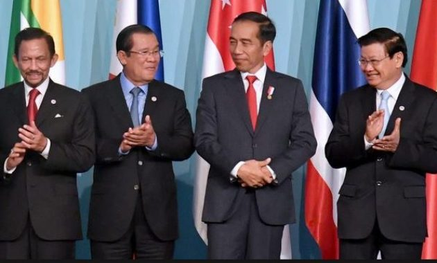
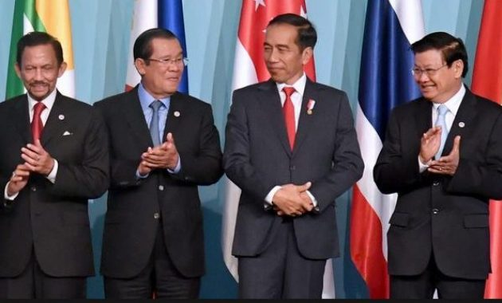

Kerja sama antarnegara merupakan hubungan yang dijalin antara dua negara atau lebih dalam berbagai bidang, untuk mencapai tujuan bersama. Bentuk kerja sama ini dilakukan untuk mempererat hubungan antarnegara, mencukupi kebutuhan dalam negeri, dan saling membantu ketika ada yang membutuhkan bantuan. Contohnya, Indonesia mempunyai potensi sumber daya alam yang melimpah. Sementara, Jepang memiliki potensi dalam bidang teknologi. Akhirnya, terjadilah kerja sama internasional di antara kedua negara.
Tujuan pertama dari kerja sama internasional adalah untuk mempererat persahabat antar negara yang menjalin kerja sama. Dengan mempererat persahabatan atau hubungan antar negara, maka akan membuat negara-negara tersebut terhindar dari rasa ingin bermusuhan. Sejalan dengan tujuan pertama, persahabatan yang terjalin antar negara yang melakukan kerja sama dapat menciptakan perdamaian dunia.Perdamaian dunia ini tentu saja hal yang diidam-idamkan oleh setiap orang. Karena dengan terciptanya perdamaian, maka akan tercipta pula keadaan yang lebih baik.
Tujuan yang ketiga ini merupakan tujuan yang umumnya ingin dicapai oleh setiap negara, karena salah satu faktor suatu negara menjalin kerja sama adalah untuk dapat menunjang dan meningkatkan pertumbuhan ekonomi di negaranya. Contohnya adalah Indonesia yang merupakan negara berkembang. Karena masih berkembang, Indonesia ingin mencapai tujuan agar negaranya menjadi negara maju sehingga melakukan berbagai macam kerja sama internasional, seperti ekspor dan impor.
Melalui kerja sama internasional, suatu negara dapat melakukan program pertukaran pelajar sehingga dapat membentuk tenaga ahli yang baru.Lahirnya tenaga ahli yang baru akan memberikan dampak yang baik bagi negara tersebut. Selain itu warga negara yang telah menjadi tenaga ahli dapat membuat lapangan pekerjaan yang baru dan memperluas tenaga kerja yang ada di negara tersebut.

.png)